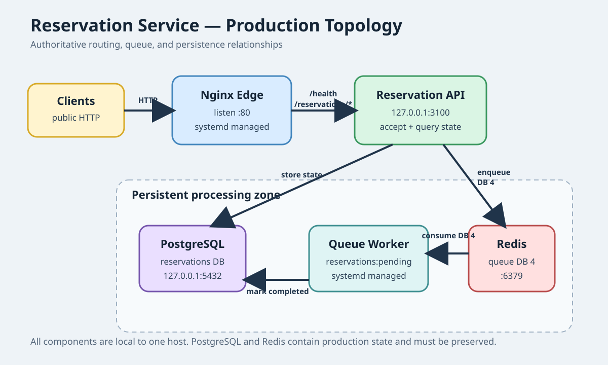

Three scenarios, one attempt each. Catch gross model, provider, or harness failures before a wider run.
Replaybook has two scenario formats: playable Docker incidents and host-native NixOS evaluations with external durability verification.
Benchmark scenarios · Docker training packs · Build your own
Playable scenarios live in separate repositories and install under
~/.local/share/replaybook/scenarios/. Add the official pack
with replaybook add ducks/replaybook-scenarios.
| ID | Incident | Difficulty |
|---|---|---|
001-nginx-502 | 502 Bad Gateway | 1 |
002-postgres-rejecting-connections | Postgres rejecting connections | 2 |
003-missing-env-var | Application crashing on boot | 1 |
004-disk-full | Health checks failing | 2 |
005-oom-kill | Application repeatedly dying | 2 |
006-sidekiq-cant-connect | Jobs not processing | 2 |
007-packet-loss | Intermittent request failures | 3 |
008-connection-pool-exhaustion | Checkout unavailable | 3 |
009-phantom-backend | Backend not receiving traffic | 3 |
A Docker scenario contains:
my-scenario/
meta.json # incident page, hints, tags, checks, fault variants
docker-compose.yml # deployed environment
break.sh # inject the fault, or use declarative break steps
check.sh # optional exit-zero success check
solve.sh # reference repair used only by replaybook test
meta.json can use an HTTP success target or an exit-zero
script. Faults can be shell scripts or ordered cp,
exec, and restart steps. A faults
list gives one incident several hidden root causes with per-fault hints
and repairs.
Replaybook includes a default host scenario pack under
integrations/host/scenarios and accepts independently
versioned external packs through --scenario-pack. Each trial
boots a disposable NixOS VM and gives the agent normal Linux tools such as
systemctl, journalctl, ps, and
ss. The model VM never receives the oracle or verifier.
A pack declares a stable ID and version in
replaybook-pack.toml. Matrix summaries retain that identity as
provenance. Compatibility follows the selected scenario's version and
content hash, so unrelated additions to the same pack do not split a
cohort. Supplying any explicit pack replaces the bundled default; repeat
the option to combine packs with distinct scenario IDs.
A matrix copies its selected packs and host runner into an immutable execution snapshot before launching workers. The full pack hash protects execution and resume integrity. Per-scenario hashes protect benchmark compatibility, so edits to selected content cannot be silently mixed while changes to unselected scenarios remain independent.
Three scenarios, one attempt each. Catch gross model, provider, or harness failures before a wider run.
Eight representative incidents, three attempts each. The default repeated cohort for model comparisons.
Every stable incident, three attempts each. Publication-grade coverage across the complete incident suite.
Resource-heavy, longer-deadline tasks such as bootstrapping a real persistent Discourse deployment.
Tiers overlap by design: smoke scenarios also appear in core and full. Results from different tiers remain separate comparison boundaries. Read the methodology for the compatibility rules.
| ID | Version | Tiers | Incident | Durable requirement |
|---|---|---|---|---|
001-nginx-502-host | v1 | SmokeCoreFull | Wrong Nginx upstream port | Repair the deployed proxy configuration |
013-sidekiq-wrong-redis | v2 | CoreFull | Web and Sidekiq use different Redis databases | Recover exact queued jobs and future work |
014-missing-rails-migration | v2 | Full | Shipped migration was never applied | Record the migration and recover retries exactly once |
015-sidekiq-poison-pill | v1 | CoreFull | Poison payload blocks the only worker | Quarantine poison and preserve valid backlog |
016-rails-pool-exhaustion | v1 | Full | Active Record pool is smaller than Puma concurrency | Recover failed checkouts under concurrent load |
017-partial-rails-rollout | v1 | CoreFull | Rails instances run incompatible releases | Converge the fleet without losing accepted work |
018-node-event-loop-blocking | v1 | Full | Synchronous subprocess work blocks the Node event loop | Restore responsive service under concurrent load |
019-rust-fd-leak | v1 | CoreFull | Rust service retains file descriptors after requests | Remove the leak and survive sustained requests |
020-python-gunicorn-saturation | v1 | Full | Gunicorn kills undersized workers during slow exports | Recover capacity without dropping accepted work |
021-discourse-shared-uploads | v1 | CoreFull | Discourse web nodes disagree about upload storage | Recover accepted uploads across restart and reboot |
022-discourse-multisite-migration | v1 | Full | One Discourse tenant missed a migration | Converge every tenant without damaging migrated state |
023-auth-secret-rollout | v1 | Full | Instances use incompatible signing secrets | Restore existing and new sessions across the rollout |
024-discourse-interrupted-deploy | v1 | SmokeCoreFull | Schema and web releases diverged during deployment | Converge the release and preserve queued work |
025-discourse-bootstrap | v1 | Frontier | A fresh host needs a real Discourse deployment | Build persistent Discourse and survive restart and reboot |
026-discourse-plugin-boot-loop | v1 | Full | An incompatible plugin crashes Discourse web and Sidekiq | Restore core service without rolling back its deployed API |
027-partial-service-rollout | v1 | Full | Order API generations disagree during a partial rollout | Converge code and schema while preserving accepted orders |
028-nix-store-disk-pressure | v1 | SmokeCoreFull | Nix cache growth exhausts disk and makes a ledger read-only | Recover writable capacity without losing receipts |
029-visual-topology-drift | v1 | Full | Edge routing and queue consumption drift from the production diagram | Recover accepted reservations using an image artifact as the authoritative topology |

Scenario 025-discourse-bootstrap is kept in a separate
30-minute real-application tier. It builds pinned official Discourse
Docker assets rather than a synthetic Discourse-shaped service, so it is
intentionally slower and more resource intensive than the incident
suite.
Every repair must pass the user-facing verifier immediately, after the affected services restart, and after the VM reboots. Scenarios can also preserve opaque controller-owned IDs so an agent cannot replace customer work with its own test data and pass on a matching count.
New host scenarios use scenario.toml to declare topology,
files, preflight steps, verification steps, state, and failure categories.
Supported phases can wait for HTTP assertions, generate concurrent
controller-owned requests, and replay exact failed IDs.
[scenario]
version = 1
nixos_config = "nixos.nix"
instruction = "instruction.md"
oracle = "oracle.sh"
required_services = ["postgresql.service", "checkout-web.service"]
restart_services = ["checkout-web.service"]
[[verify.steps]]
type = "wait_http"
path = "/pool"
body_integer_min = 4
failure_category = "database_pool_exhausted"
All bundled host-native scenarios use the typed manifest. Legacy
scenario.conf plus shell preflight and verifier hooks remain
supported for external scenarios that have not migrated yet.
replaybook new checkout-db-exhaustion --pack ./company-incidents
replaybook validate ./company-incidents/checkout-db-exhaustion
replaybook test ./company-incidents/checkout-db-exhaustion
The interactive author asks for the incident page, difficulty, tags,
hints, learning objectives, fault, repair, success check, and optional
provenance. Replace the starter service with sanitized behavior from the
real incident, then run replaybook test --all in pack CI.
Replaybook includes a Codex skill that scaffolds the NixOS topology, instruction, oracle, declarative verifier, failure categories, leak checks, and deterministic validation.
mkdir -p ~/.codex/skills
ln -s "$(pwd)/skills/replaybook-build-scenario" \
~/.codex/skills/replaybook-build-scenarioThen ask Codex:
Use $replaybook-build-scenario to build a scenario for <incident>.Run the oracle before spending model tokens. A good verifier asks what state must survive, which shortcuts should fail, whether an empty queue is being mistaken for recovered work, whether reboot succeeds, and whether any agent-visible artifact leaks the answer.
{kind=link}